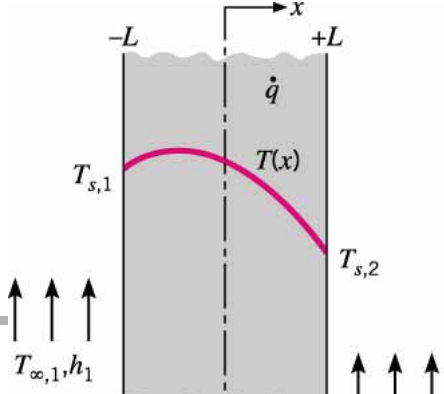
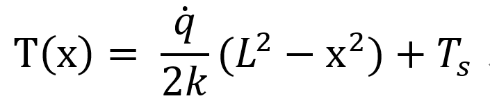
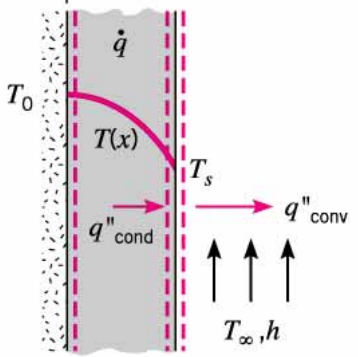
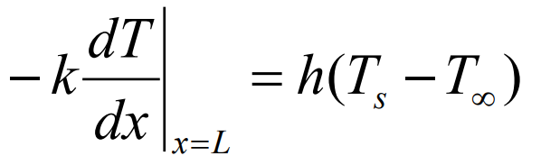
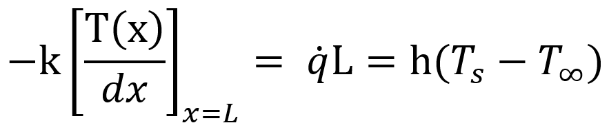

[Heat and Mass transfer] Ch 3 ,1-Dimensional, Steady-State Conduction - Uniform E generation
이제 한발 더 나아가서 가정 하나를 바꿔보자
Assumption
Steady state process
1-Dimensional
Constant E generation
Unifrom k
[General Temperature Eq]
![[Heat and Mass transfer] Ch 3 ,1-Dimensional, Steady-State Conduction - Uniform E generation](./images/img-001.png)
에서
![[Heat and Mass transfer] Ch 3 ,1-Dimensional, Steady-State Conduction - Uniform E generation](./images/img-002.png)
위 식을 적분해주면
![[Heat and Mass transfer] Ch 3 ,1-Dimensional, Steady-State Conduction - Uniform E generation](./images/img-003.png)
이제 Boundary condition을 통해서 T(x)를 derive해보자
T(-L) = Ts1, T(+L) = Ts,2

![[Heat and Mass transfer] Ch 3 ,1-Dimensional, Steady-State Conduction - Uniform E generation](./images/img-005.png)
따라서, 상수를 대입해주면
![[Heat and Mass transfer] Ch 3 ,1-Dimensional, Steady-State Conduction - Uniform E generation](./images/img-006.png)
(qx 는 더이상 x와 independent하지 않다)
Boundary condition이 다음 그림과 같이
Symmetric한 경우는??
T(-L) = Ts= T(+L)
![[Heat and Mass transfer] Ch 3 ,1-Dimensional, Steady-State Conduction - Uniform E generation](./images/img-007.png)

Temperature Distribution을 그리면
위 그림처럼 이차함수 형태가 된다.
여기서 x = 0 에서 dT/dx = 0이 되고,
이 순간 Heat transfer rate = 0 이 된다.
즉, Insulation 효과와 동일 하다

따라서, 그림을 다음과 같이 Adiabatic surface라고 고려 가능.
이제 바깥 surface convection을 고려해주자.
Surface x = L에서는 convection과 conduction의
Heat flux 는 동일해야만 한다.
[why? Heat generation이 surface에서는 없으므로]

우리는 T(x)를 알고 있으므로, 미분해주고 x=L대입하면

즉 Convection Heat flux = Heat generation * L과 같다는 의미이다.
Heat generation q dot의 단위를 보면
W/m^3이다. 즉 단위부피당 열의 생성량을 의미한다.
따라서
q dot * 길이
가 의미 하는 것은
해당 길이동안
물질이 생성한 총 Heat flux (W/m^2)
를 의미한다.
그리고 그 Heat flux를 그대로 Convection이 전달받아서 위식이 나온 것이다.
q dot과 Heat flux의 관계를 햇갈리지 않게 이해할 필요가 있다.